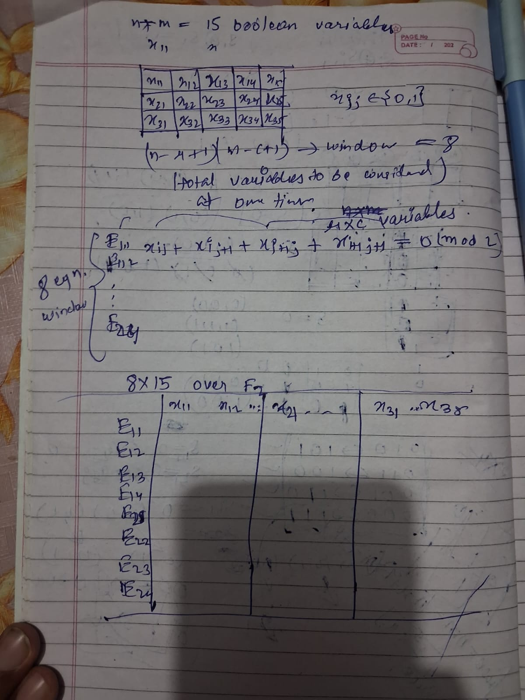

woke up at 5 lets goo, going to work on div2 problems. One thing ive realised is that for few weeks i have completely stopped
my rigorous mathematical approach towards the problems.. means first totally solving the problem mathematically then coding. I read this wonderful blog
the reason you are bad at codeforces and it made me realise that i have been doing a lot of mistakes in my approach.
so today onwards i am not going to repeat the same mistake, below div1 you dont need rigourous coding mastery, in div2 its just maths and optimisation.
starting my day with this prob 1840B today's 1000 rated prob are much harder than what i used to solve months back maybe because of AI or increased competiton, but lets see ill have a crack at it.
this is really interesting problem, i never thought college mathematics will ever come useful in CP, especially in 1000 rated XOR problem lmao XD. This problem sneakely uses Guassian Elimination (XOR basis), first you have to know this simple thing:
XOR is basically addition in GF(2) field,{modulo 2}, ex: (1+1)%2=0 is same as 1(xor)1 and vice-versa.
This problem gives us a manual matrix simple a sliding matrix window r*c. and xor of all the cells inside this sliding matrix should be 0.
let the sliding matrix be of dimension 2*2 so the equation will be x{i,j} + x{i,j+1} + x{i+1,j} + x{i+1,j+1} = 0(mod2), this is a linear equation in GF(2) field. so we can use Gaussian elimination to solve this problem.
total equations like this will be (n-r+1)*(m-c+1) {our parent matrix is n*m} and total variables will be n*m.
so by definition we can deduce that free variables will be our solutions to our boolean equations. But before that we have to check if the matrix has rank= (n-r+1)*(m-c+1) or not, we just have to make sure that each equation chosen pivot variable must not appear in previously processed eqn.
if you were to make a {r*c} X {(n-r+1)*(m-c+1)} matrix and do Guassian elimination on it, you will notice all this and its normal for the variable to reappear in later equations, even though logically the bottom right cell of the sliding matrix is kind of pivot to maximum equations but it is unique for first eqn that it contributes to.
so at last we conclude that the number of free variables will be n*m - (n-r+1)*(m-c+1) and answer will be 2^(number of free variables).
heres the model for testcase 3 5 2 2 .

refer : Linear Basis (xor basis extended)
beautiful xor techniques
special cases of gaussian
XOR Basis Algorithm
follow my everyday blogs, youre going to witness my life ramming and unfolding infront of your eyes!!
© 2026 My Simple Blog